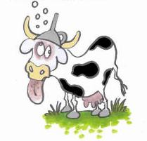

Forums galactiques > Assemblée Galactique : diplomatie officielle > Une vache à l'assemblée??
Pages : 1
| Vachozer Respect diplomatique : 11  03/01 ETU 20:42 | Score : 11 Détails Une petite vache de 200 Kg avec un entonnoir sur la tête(symbole de pouvoir pour les vaches) ce baladait dans l'assemblée en cherchant un microphone, elle était observer par des commandants qui la fixait d'un air de jamais vu, la vache espéra de chercher un micro le plus rapidement
Ils ont quoi ces types, ils ont jamais vu une vache? Ha voilà un pupitre et un micro juste dessus ... La vache monta sur le pupitre, elle ce mit debout et prit le micro bonsoir à vous comman ... et merde il y a pas de volume sur ce micro La vache reposa le micro descendit du pupitre et ce partit en direction des enceintes, la vache augmenta le son de 10, et elle repartit en direction du pupitre, elle reprit le micro Bonsoir à vous commandants de la galaxie d'origine, je suis le fruit d'une reproduction raté de chevrozer, ce qui fais de moi le petit fils de Ghozer ^_^;(sourire forcé) Et avec le peux d'intelligence qui depasse les vaches, je suis devenue le leader d'un groupe Vachiste, mais je vais vous racontez comment c'est arrivé La vache appuya sur un bouton cacher pour faire apparaitre de la fumée Attention, cette histoire ne convient pas à enfants de moins de 3 ans et demie ¤¤¤¤¤¤¤¤¤¤¤¤¤¤¤¤¤¤¤¤¤¤¤¤¤¤¤¤¤¤¤¤¤¤¤¤¤¤¤¤¤¤¤¤¤¤¤¤¤¤¤¤¤¤¤¤¤¤¤ " - Général Cervo Manquet!!! Venez voir le radar, il detecte un vaisseau remplit d'être vivant - HEIN?? c'est sûrement la cargaison de magasine ' découvre le kama-chevra en t'amusant' que j'ai commander. - Mais général, nos radars detecte des formes de vies! - Mais oui comme la fois ont à crue découvrir des poils sur la lune! - Alors regarder par les fenetres, vous verrez bien ce qui ce passe!" [Narrateur=On] Et oui, un transporteur lourd remplit de vaches armées de sabots arriva en direction de la planete, pour en faire une colonie [Narrateur=Off] " - Général, c'est un transporteur lourd, il a sûrement des ressources et de la nourriture - Chouette notre planete va pouvoir son premier vaisseau. - Mon Général, il y a aucune ressource dans le vaisseau, mais des vaches en sorte par milliers! - Je vois, ont va pas pouvoir fabriqué un vaisseau, mais ont va pouvoir ce nourrir sans effort!" [Narrateur=On] Mais les vaches avaient pas l'intention de ce faire manger, mais de conquérir cette planete, mais elle ce laissait emmener dans un sombre hangar, jusqu'à que ... [Narrateur=Off] " - Général les vaches attaquent et mangent nos soldats que devons nous faire? - Bah riposté, c'est evident non ? - Tres je vais donner l'ordre qu'il faut riposté - Quel idiot... " [Haut parleur=On] Bande d'humain idiot votre planete sera notre Muhahahahahaha [Haut Parleur=Off] [Narrateur=On] Il restait plus que 15 vaches, 21 soldats et le Général [Narrateur=Off] " - Nous vous avons encercler humains, vous êtes fichu - Hey les gars les vaches nous attaquent pas, ont fais quoi? - Bah on ce suicide. - NOOON arreter qui va me defendre apres !!! - Youpi, vous avez vus ils ont eu peur, il reste que toi et ton drôle de chapeau - Pitier je vous donnerais des leems, des milliards de leems - Tu ment tu as plus que 340 leems - Mais comment tu sais ça? - C'est écrit sur l'ordinateur la bas - Et mer** - Bouffons le !! " [Narrateur=On] Le général c'est fais entierement manger entierement... non, il restait plus que la partie génital du type [Narrateur=Off] " - On fais quoi maintenant ? - Bah on repare nos degats " ¤¤¤¤¤¤¤¤¤¤¤¤¤¤¤¤¤¤¤¤¤¤¤¤¤¤¤¤¤¤¤¤¤¤¤¤¤¤¤¤¤¤¤¤¤¤¤¤¤¤¤¤¤¤¤¤¤¤¤¤ Et c'est ainsi que l'empire Vachiste est née Vachozer s'essuya avec une serviette et la jeta sur la foule, un gars c'est prit la serviette.... " - MES YEUX HAAAAAAAA - Ce n'est qu'un accident de sensibilité, je l'avais dis qu'il fallait pas être sensible " |
Pages : 1
Forums galactiques > Assemblée Galactique : diplomatie officielle > Une vache à l'assemblée??